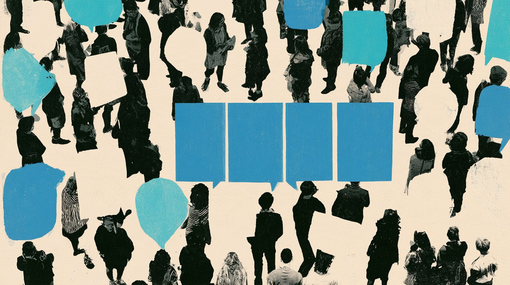

About half of new English web articles are now machine-written. A viral post says that means AI is poisoning itself for good. The research says something narrower, and in one way more important.
AI models do fall apart when machine-made data replaces human data. They mostly hold up when human data is kept and added to, and labs can choose to do that. The narrowing nobody can switch off is happening in people: how we write, speak and share what we know is already becoming more alike as more of us think through the same few models.
So the scarce thing in the AI economy is no longer text or computer chips. It is fresh, verified, varied human work: the odd phrase, the local fact, the minority view.
| Label | What it means here |
|---|---|
| FACT | Peer-reviewed or primary-source finding, checked at the source |
| REPORTED | From a credible outlet, a preprint or a party's own claim |
| INFERENCE | Melophon's reading of the evidence |
| WATCH | An open question to track |
What "model collapse" means
When an AI learns from another AI's output, it loses the rare cases first, and they do not come back. The reason is simple: an idea that never appears in one round's output has no weight in the next model, so that model can never produce it again.
The idea comes from a July 2024 paper in Nature by an Oxford-led team. They trained small models, each on the previous one's output, and watched the edges of the original data vanish. FACT
The "photocopy of a photocopy" comparison is close but not exact. A photocopy blurs everything evenly. Model collapse erases the edges first and sharpens the middle, so the output gets more confident, more typical and less varied.
| Study | What it found | Label |
|---|---|---|
| Shumailov et al., Nature, July 2024 | Small language, image and statistical models trained on each other's output lost the rare cases; errors piled up | FACT |
| Alemohammad et al., 2024 | Image models in the same loop lost quality or variety unless each round got enough fresh real data | FACT |
| Dohmatob et al., 2025 | In theory, even 1% synthetic data can stop a model from improving with more data | FACT |
Why the doomsday version is overstated
Collapse depends on throwing away the human data, and the companies building frontier AI do not do that. The scary version describes a lab experiment, not how the industry trains.
| The viral claim | What the evidence says | Label |
|---|---|---|
| "A new paper in Nature" | It was published in July 2024 | FACT |
| "ChatGPT has a big problem" | The paper tested small models, not ChatGPT or any frontier system | FACT |
| "Irreversible brain damage" | Only when real data is replaced. When synthetic data is added to the original real data, errors stay bounded (Gerstgrasser et al., 2024) | FACT |
| AI is doomed to collapse | A 2025 Stanford and Harvard review found the worst results assume all past data is deleted each round, which no frontier lab does. It still calls the loss of rare data a real risk, especially for minority groups | FACT |
| Nothing can stop it | Checking machine-made data before training on it prevents collapse, even with imperfect checks (Feng et al., 2025) | FACT |
| It happens fast | Some of the fastest collapse in lab tests came from a sampling setting that reused the same random draws each round (Liu and Han, Sept. 2026) | REPORTED |
INFERENCE Collapse is a risk of engineering choices, not a law of nature. Three choices decide it: keep the human data, check what the machine makes, and sample honestly.
What the loop looks like
We ran the loop on a simple model of human variety. The share of fresh human data in each round sets a floor under how much rare material survives. With none, the rare ideas are gone by round five. INFERENCE
Without fresh human data, rare ideas vanish within five generations
Share of the rarest 90% of ideas still appearing, versus the human baseline
Keeping all past data means no idea disappears completely, but each rare idea shows up less and less often as machine copies pile up. Try it yourself in the interactive version in Brief № 014.
The loop nobody controls: us
There are two loops. In the machine loop, AI learns from AI, and labs control the recipe. In the human loop, people learn from AI. Nobody controls that one, and researchers can already measure it.
| What changes | The evidence | Label |
|---|---|---|
| Creativity | With AI story ideas, 300 writers scored up to 8.1% higher on novelty, and the least creative gained most. Their stories were also about 10% more alike (Doshi and Hauser, Science Advances, 2024) | FACT |
| Memory | Of 54 students who wrote essays with GPT-4o, over 80% could not accurately quote their own essay after the first session; graders called the essays generic (MIT Media Lab, 2025; small sample, not peer reviewed) | REPORTED |
| Speech | Across 740,249 hours of talks and podcasts, "delve" and other words ChatGPT favors rose in spoken human language after its release (Max Planck Institute) | REPORTED |
| Culture | AI autocomplete suggested pizza and Christmas to Indian writers, and their Diwali essays became more generic (Cornell, CHI 2025) | FACT |
| Shared knowledge | Stack Overflow activity fell 25% within six months of ChatGPT (PNAS Nexus); Wikipedia's human pageviews fell about 8% in 2025 (Wikimedia) | FACT |
The good: AI help lifts the people starting furthest behind, such as weaker writers, non-native speakers and anyone without an editor.
The bad: each person may improve while the group gets more alike. Culture drifts toward the defaults of the most-used models. And the public places where people answered each other's questions, the same places AI learned from, are getting quieter. INFERENCE

World models: the loop moves into the physical world
The next wave of AI, "world models," learns space and physics from video and scans so robots and cars can move through real places. They face the same problem. Simulated worlds are cheap and endless, but rare real moments, like a near miss or a strange intersection, are exactly what a simulation tends to lose. That makes real-world capture the scarce human data of physical AI. INFERENCE
| When | What happened | Label |
|---|---|---|
| Through 2025 | Pokémon Go and Ingress players who opted into AR scanning of PokéStops and Gyms helped build Niantic's map of public places. Normal play did not create scans (Game Developer) | FACT |
| May 2025 | Niantic sells its games to Scopely for $3.5 billion and spins out Niantic Spatial (Pokémon GO Hub) | FACT |
| August 2025 | Google DeepMind's Genie 3 generates interactive 3D worlds in real time; Waymo later builds a driving simulator on it (Wikipedia) | REPORTED |
| December 2025 | Niantic Spatial partners with Vantor, a firm with defense and intelligence clients, on navigation where GPS fails (Kotaku) | FACT |
| March 2026 | Niantic Spatial's model, trained on 30 billion player images, places a phone within centimeters; Coco delivery robots use it (MIT Technology Review) | REPORTED |
| June 2026 | Dutch papers report player scans trained military drone navigation. Vantor denies using Pokémon Go data; Niantic Spatial says scans fed only an early model and game data no longer flows to it (Pokémon GO Hub) | REPORTED |
INFERENCE Players said yes to helping an AR game. Years later, a model built partly on their scans serves robot delivery and a partner with defense clients. That gap between what people agreed to and how their data is later used is the consent question at the center of physical AI.
Your digital twin, and how to keep your voice
A personal AI "twin" learns from your writing. Then you start writing with the twin, and its next update learns from the assisted you. Each round, the rare parts of you, like an odd phrase, a minority opinion or a hometown reference, count for less.
Twins can be accurate. Stanford built agents of 1,052 people from two-hour interviews that matched their survey answers 85% as well as the people matched their own answers two weeks later (Stanford HAI, 2025). FACT But when AI stands in for a group of people, its answers are less varied than the real people's and often read like an outsider's stereotype (Wang, Morgenstern, Dickerson, 2025). REPORTED
Our model shows the same loop at the scale of one person. If all your new writing is assisted, your twin loses your rarest traits within about five updates. If 30% is your own, about a third of them stay in use. INFERENCE
Five ways to keep your voice
- Keep a pre-AI archive. Save the writing, voice memos and photos you made before AI tools, apart from anything a model drafted.
- Label what was assisted. Note which emails and documents a tool drafted, so the unassisted ones can count for more.
- Refresh from you, not from its drafts. Update a twin with new interviews or your own writing, not with mail it helped write.
- Write some things alone. Your unassisted share is the floor that keeps the rare parts of you in the record.
- Ask what it is trained on. Before signing up for a voice clone or memorial bot, ask whether it keeps your originals and whether it learns from its own output.
Who gets paid for being human
Human data now has a price, but most of the money goes to whoever owns the platform, not to the people who wrote the words.
| Who | What they get | Label |
|---|---|---|
| Book authors | A $1.5 billion settlement, $3,000 per book, for over 400,000 books used to train Claude; approved July 2026 (JURIST) | FACT |
| Expert contractors | Mercor passed $2 billion in annualized revenue by June 2026, paying 60% to 70% to 30,000+ weekly contractors (Dealroom) | REPORTED |
| News Corp | Over $250 million across five years from OpenAI (Quartz) | REPORTED |
| About $60 million a year from Google; the people who wrote the posts get nothing (The Decoder) | REPORTED | |
| You, selling your own data | Typically a few dollars (Quartz) | REPORTED |
| Websites crawled by AI | Nothing directly. In July 2026, Anthropic's crawlers requested 1,917 pages for each visitor they sent back; OpenAI 251; Google 4.7 (Cloudflare data via eCorp IT) | REPORTED |
| Musicians | On Deezer, over half of daily uploads are AI-generated, yet AI tracks drew only 1% to 3% of listening in April 2026 (TechCrunch) | REPORTED |
Conflict note: Claude, which helped compile this report, is made by Anthropic, the defendant in the settlement above and the company with the highest crawl ratio listed.
Four futures to 2030
The outcome turns on two choices nobody has fully made yet: whether fresh human work keeps flowing in, and whether anyone can tell where data came from.
Human data locked in paid silos. Strong models for those who pay. The open web thins out.
Paid, labeled human data. Many models; culture stays varied.
Commons starve and culture converges. Models drift toward the average.
Models hold up, but human and machine work blur. Fraud and distrust rise.
INFERENCE Late 2026 sits between the muddy middle and walled gardens. Licensing deals and court settlements are building the walls, while AI-content counts that rely on detectors and widespread streaming fraud show that knowing where content came from is still hard.
What to watch
| Signal | Latest reading | Label |
|---|---|---|
| Share of new web articles written by AI | About 50%, flat since early 2025 (Axios) | WATCH |
| AI music: uploads vs. listening on Deezer | Over half of uploads; 1% to 3% of streams | WATCH |
| Pages AI crawlers take per visitor sent back | Anthropic 1,917; OpenAI 251; Google 4.7 (July 2026) | WATCH |
| Human traffic to Stack Overflow and Wikipedia | Down 25% and about 8% | WATCH |
| Supply of public human-written text | Fully used between 2026 and 2032, by Epoch AI's estimate | WATCH |
Read more in the Mechanism Series
How this was made
- Starting point: a viral post about the 2024 Nature paper and a WIRED story on world models. Both were treated as leads, and every claim was checked against the studies and primary sources linked above.
- Labels: preprints, single outlets and detector-based counts are marked REPORTED. Peer-reviewed and primary-source findings are FACT.
- The model: 10,000 "ideas" with a long-tailed frequency curve, like human language. Each round draws 50,000 samples from the previous model, trimmed the way chatbots commonly trim unlikely words, then refits. "Rare" means the 9,000 least common ideas. Results average 8 runs over 20 rounds. A toy model shows how the loop works, not a forecast for any real system.
- Limits: AI labs do not publish their data mix, so the real share of machine-made training data is unknown. Counts of AI-written content rely on detectors, which are imprecise.
- Images: generated with Midjourney for Melophon as illustration. They are illustrations, not photographs of real people or events.
Researched and compiled with Claude (Anthropic). Final editorial judgment: Melophon.
Conflict note: Anthropic trains AI on web data, runs the ClaudeBot crawler and paid the book settlement cited above, so it has a direct stake in the questions this report raises.